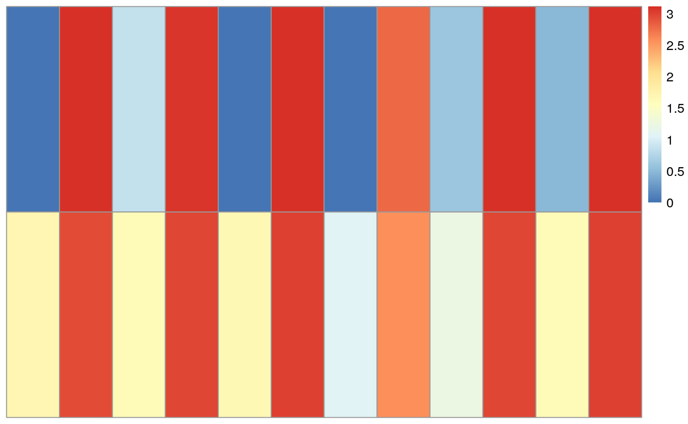
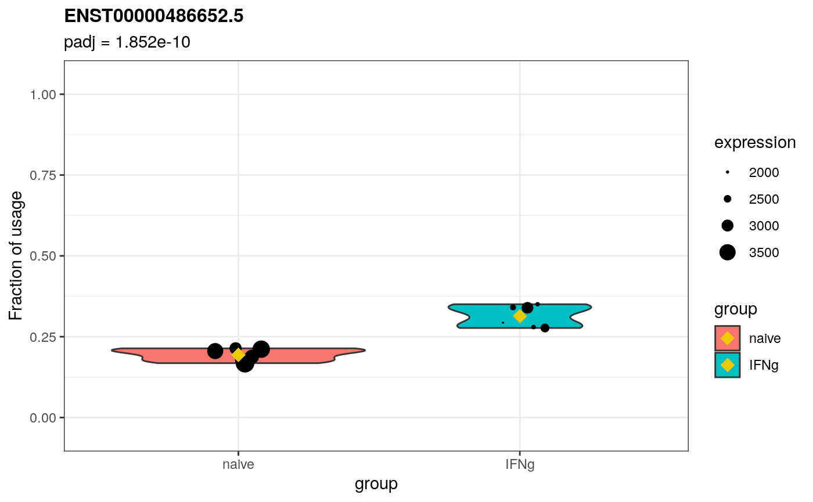
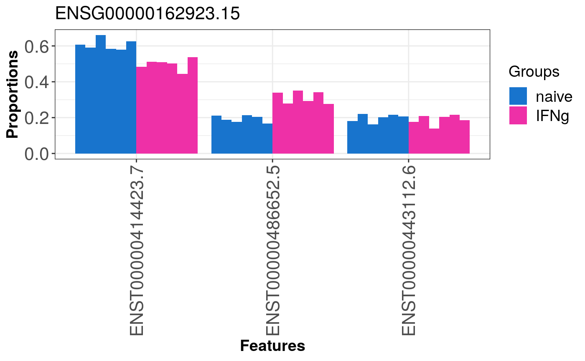

transcripts.RmdQuantification of data from Alasoo et al. (2018) against GENCODE (Frankish, GENCODE-consoritum, and Flicek 2018) using Salmon (Patro et al. 2017).
library(macrophage)
dir <- system.file("extdata", package="macrophage")
coldata <- read.csv(file.path(dir, "coldata.csv"))
coldata <- coldata[,c(1,2,3,5)]
names(coldata) <- c("names","id","line","condition")
coldata$files <- file.path(dir, "quants", coldata$names, "quant.sf.gz")
all(file.exists(coldata$files))## [1] TRUEWe load in the quantification data with tximeta:
library(tximeta)
library(dplyr)
coldata <- coldata %>% filter(condition %in% c("naive","IFNg"))
se <- tximeta(coldata, countsFromAbundance="scaledTPM", varReduce=TRUE)
library(DRIMSeq)
counts <- data.frame(gene_id=sapply(mcols(se)$gene_id, `[`, 1),
feature_id=mcols(se)$tx_name,
assays(se)[["counts"]])
samples <- as.data.frame(colData(se))
names(samples)[1] <- "sample_id"
d <- dmDSdata(counts=counts, samples=samples)
n <- 12
n.small <- 6
d <- dmFilter(d,
min_samps_feature_expr=n.small, min_feature_expr=10,
min_samps_feature_prop=n.small, min_feature_prop=0.1,
min_samps_gene_expr=n, min_gene_expr=10)
d## An object of class dmDSdata
## with 790 genes and 12 samples
## * data accessors: counts(), samples()
library(DEXSeq)
sample.data <- DRIMSeq::samples(d)
count.data <- round(as.matrix(counts(d)[,-c(1:2)]))
dxd <- DEXSeqDataSet(countData=count.data,
sampleData=sample.data,
design=~sample + exon + condition:exon,
featureID=counts(d)$feature_id,
groupID=counts(d)$gene_id)
# this takes a little over a minute on my laptop
system.time({
dxd <- estimateSizeFactors(dxd)
dxd <- estimateDispersions(dxd, quiet=TRUE)
dxd <- testForDEU(dxd, reducedModel=~sample + exon)
})## user system elapsed
## 14.009 1.509 12.673
dxr <- DEXSeqResults(dxd, independentFiltering=FALSE)
qval <- perGeneQValue(dxr)
dxr.g <- data.frame(gene=names(qval),qval)
columns <- c("featureID","groupID","pvalue")
dxr2 <- as.data.frame(dxr[,columns])
library(pheatmap)
pheatmap(log10(as.matrix(dxr[dxr$groupID == names(which.min(qval)),"countData"])+1),
cluster_rows=FALSE, cluster_cols=FALSE, show_rownames=FALSE, show_colnames=FALSE)
stageR for stagewise testing
library(stageR)
pConfirmation <- matrix(dxr$pvalue,ncol=1)
dimnames(pConfirmation) <- list(dxr$featureID,"transcript")
pScreen <- qval
names(pScreen) <- names(pScreen)
tx2gene <- as.data.frame(dxr[,c("featureID", "groupID")])
stageRObj <- stageRTx(pScreen=pScreen, pConfirmation=pConfirmation,
pScreenAdjusted=TRUE, tx2gene=tx2gene)
stageRObj <- stageWiseAdjustment(stageRObj, method="dtu", alpha=0.05)
dex.padj <- getAdjustedPValues(stageRObj, order=TRUE,
onlySignificantGenes=FALSE)
head(dex.padj, n=10)## geneID txID gene transcript
## 1 ENSG00000225492.6 ENST00000513638.5 0.000000e+00 0.000000e+00
## 2 ENSG00000225492.6 ENST00000394662.2 0.000000e+00 0.000000e+00
## 3 ENSG00000228106.5 ENST00000442171.5 0.000000e+00 2.312905e-16
## 4 ENSG00000228106.5 ENST00000450784.5 0.000000e+00 1.000000e+00
## 5 ENSG00000228106.5 ENST00000441676.5 0.000000e+00 1.000000e+00
## 6 ENSG00000228106.5 ENST00000435378.5 0.000000e+00 1.000000e+00
## 7 ENSG00000228106.5 ENST00000457636.5 0.000000e+00 1.000000e+00
## 8 ENSG00000162923.15 ENST00000486652.5 4.615723e-09 1.851594e-10
## 9 ENSG00000162923.15 ENST00000414423.7 4.615723e-09 2.625860e-06
## 10 ENSG00000162923.15 ENST00000443112.6 4.615723e-09 1.000000e+00ENST00000486652.5 is the most significant transcript of the most significant DTU gene (ENSG00000162923.15) that does not have a p-value of exactly 0, so I will demonstrate the visualizations with this transcript. We talked about having the test statistics available within the RangedSummarizedExperiment prior to calling iSEE. For now, I will just add the DEXSeq + stageR adjusted p-values to the rowData.
se <- se[rownames(se) %in% dex.padj$txID,] # filter se based on DRIMSeq filtering? Do we want that as a general rule?
rowData(se)[,c("gene_padj", "tx_padj")] <- dex.padj[match(rownames(se),dex.padj$txID),c("gene", "transcript")]Compute proportions
# Function based on DEXSeq's classes.R
.getTotalCount <- function(countData, tx2gene) {
geneForEachTx <- as.character(tx2gene$gene_id[match(rownames(countData), tx2gene$tx_name)])
forCycle <- split(seq_len(nrow(countData)), as.character(geneForEachTx))
all <- lapply(forCycle, function(i) {
sct <- countData[i, , drop = FALSE]
rs <- t(vapply(seq_len(nrow(sct)), function(r) colSums(sct[, , drop = FALSE]), numeric(ncol(countData))))
# adapted, removed "-r" to get gene-level counts
rownames(rs) <- rownames(sct)
rs
})
totalCount <- do.call(rbind, all)
totalCount <- totalCount[rownames(countData), ]
return(totalCount)
}
tx2gene <- rowData(se)
tx2gene$gene_id <- unlist(tx2gene$gene_id) ## not sure why previously put in a list?
assays(se)$gene <- .getTotalCount(assays(se)$counts,tx2gene)
assays(se)$proportions <- assays(se)$counts/assays(se)$geneSanity check
## SAMEA103885102 SAMEA103885347 SAMEA103885182 SAMEA103885136 SAMEA103885368
## 768.2816 1007.3945 613.9648 604.6638 460.8691
## SAMEA103885218
## 748.9142
head(assays(se)$gene["ENST00000486652.5",]) # not a real gene-level matrix, could use gse <- summarizeToGene(se) for that if required for later visualizations. However, it is quite convenient to have the matrix in this format for the visualization function (see below)## SAMEA103885102 SAMEA103885347 SAMEA103885182 SAMEA103885136 SAMEA103885368
## 3633.908 2968.562 3263.549 2160.877 2607.467
## SAMEA103885218
## 2137.611## SAMEA103885102 SAMEA103885347 SAMEA103885182 SAMEA103885136 SAMEA103885368
## 0.2114202 0.3393544 0.1881279 0.2798234 0.1767497
## SAMEA103885218
## 0.3503511Raw usage visualization function (work in progress) For now, the input is the name of a transcript. Alternatively, it could also be the name of a gene, showing the usages of all its transcripts, either in 1 figure or in separate facets.
library(ggplot2)
plotUsages <- function(RSE, transcript, group, summaryStat){
stopifnot(is(RSE,"RangedSummarizedExperiment"))
stopifnot(transcript %in% rownames(assays(RSE)$proportions))
## needs more checks, i.e. group must be linked to colData, transcript must be a character etc.
txProp <- assays(se)$proportions
geneCounts <- assays(se)$gene
data <- as.data.frame(cbind(t(txProp[transcript, , drop = FALSE]),
t(geneCounts[transcript, , drop = FALSE])))
data$group <- group
colnames(data) <- c("proportion", "geneCount", "group")
padj <- format(rowData(se)["ENST00000486652.5","tx_padj"], digits = 4)
gg <- ggplot(data = data, aes(x = group, y = proportion, fill = group, width = geneCount)) +
geom_violin() +
geom_point(data = data, aes(x = group, y = proportion, size = geneCount), position = position_jitterdodge(jitter.width = 0.7, jitter.height = 0, dodge.width = 0.9)) +
scale_radius(name = "expression", range = c(0,5)) +
ylim(c(-0.05, 1.05)) +
ylab("Fraction of usage") +
theme_bw() +
labs(title = transcript, subtitle = paste0("padj = ", padj)) +
theme(plot.title = element_text(size = 12, face = "bold"))
if ("mean" %in% summaryStat) {
gg <- gg + stat_summary(fun = mean, geom = "point", position = position_dodge(width = 0.9), shape = 18, size = 4, colour = "gold2")
} # we could have other summary stats, like median or a weighted average, i.e. weighted on gene-level expression
return(gg)
}
gg <- plotUsages(RSE = se, transcript = "ENST00000486652.5", group = colData(se)$condition, summaryStat = "mean")
gg
The plotproportions function only takes dmDSfit, dmDStest, dmSQTLfit or dmSQTLtest objects. In other words, we cannot run the plotproportions function out of the box without first calling the dmPrecision and dmFit, which is unnecessary and quite slow.
As such, to leverage plotproportions I have started from the source code. Its just to give you an idea of what DRIMSeq is doing. I here opted for the barplot, but in larger sample settings I guess we should move to violin/boxplots.
library(reshape2)
# DRIMSeq helper function
colorb <- function(n){
clrs <- c("dodgerblue3", "maroon2", "forestgreen", "darkorange1" ,
"blueviolet", "firebrick2", "deepskyblue", "orchid2", "chartreuse3",
"gold", "slateblue1", "tomato" , "blue", "magenta", "green3", "yellow",
"purple3", "red" ,"darkslategray1", "lightpink1", "lightgreen", "khaki1",
"plum3", "salmon")
nc <- length(clrs)
if(n > nc)
clrs <- rep(clrs, ceiling(n/nc))
clrs[1:n]
}
# Local copy (minor adaptations) of DRIMSeq's plotproportions function
DRIMSeqPlotLocal <- function(RSE, group, gene, order_features = TRUE, order_samples = TRUE, group_colors = NULL, feature_colors = NULL){
txCounts <- assays(se)$counts
proportions <- assays(se)$proportions
## subset to selected gene specified by user
tx2gene <- rowData(se)
tx2gene$gene_id <- unlist(tx2gene$gene_id)
transcripts <- tx2gene[tx2gene$gene_id == gene,"tx_name"]
txCounts <- txCounts[transcripts,]
proportions <- proportions[transcripts,]
prop_samp <- data.frame(feature_id = rownames(proportions), proportions,
stringsAsFactors = FALSE)
## Order transcipts by decreasing proportion (runs a few seconds)
if(order_features){
oo <- order(apply(aggregate(t(prop_samp[, -1]),
by = list(group = group), median)[, -1], 2, max), decreasing = TRUE)
feature_levels <- rownames(prop_samp)[oo]
}else{
feature_levels <- rownames(txCounts)
}
## Order samples by group
if(order_samples){
o <- order(group)
sample_levels <- colnames(txCounts)[o]
}else{
sample_levels <- colnames(txCounts)
}
## Melt prop_samp
prop_samp <- melt(prop_samp, id.vars = "feature_id",
variable.name = "sample_id", value.name = "proportion",
factorsAsStrings = FALSE)
prop_samp$feature_id <- factor(prop_samp$feature_id, levels = feature_levels)
prop_samp$group <- rep(group, each = nrow(txCounts))
prop_samp$sample_id <- factor(prop_samp$sample_id, levels = sample_levels)
## Prepare colors for groups
if(is.null(group_colors)){
group_colors <- colorb(nlevels(group))
}
names(group_colors) <- levels(group)
## Prepare colors for features
if(is.null(feature_colors)){
feature_colors <- colorb(nrow(txCounts))
}
names(feature_colors) <- rownames(txCounts)
ggp <- ggplot() +
geom_bar(data = prop_samp, aes_string(x = "feature_id", y = "proportion",
group = "sample_id", fill = "group"),
stat = "identity", position = position_dodge(width = 0.9)) +
theme_bw() +
theme(axis.text.x = element_text(angle = 90, vjust = 0.5),
axis.text=element_text(size=16),
axis.title = element_text(size=14, face="bold"),
plot.title = element_text(size=16),
legend.position = "right",
legend.title = element_text(size = 14),
legend.text = element_text(size = 14)) +
ggtitle(gene) +
scale_fill_manual(name = "Groups", values = group_colors,
breaks = names(group_colors)) +
xlab("Features") +
ylab("Proportions")
# In this plot, we could add a summarystat and an indication of significance, i.e. a gene-level or transcript-level adjusted p-value
return(ggp)
}
ggp <- DRIMSeqPlotLocal(RSE = se, group = colData(se)$condition, gene = "ENSG00000162923.15")
ggp
## R Under development (unstable) (2020-11-02 r79396)
## Platform: x86_64-pc-linux-gnu (64-bit)
## Running under: Ubuntu 20.04.1 LTS
##
## Matrix products: default
## BLAS/LAPACK: /usr/lib/x86_64-linux-gnu/openblas-pthread/libopenblasp-r0.3.8.so
##
## locale:
## [1] LC_CTYPE=en_US.UTF-8 LC_NUMERIC=C
## [3] LC_TIME=en_US.UTF-8 LC_COLLATE=en_US.UTF-8
## [5] LC_MONETARY=en_US.UTF-8 LC_MESSAGES=C
## [7] LC_PAPER=en_US.UTF-8 LC_NAME=C
## [9] LC_ADDRESS=C LC_TELEPHONE=C
## [11] LC_MEASUREMENT=en_US.UTF-8 LC_IDENTIFICATION=C
##
## attached base packages:
## [1] parallel stats4 stats graphics grDevices utils datasets
## [8] methods base
##
## other attached packages:
## [1] reshape2_1.4.4 ggplot2_3.3.2
## [3] stageR_1.13.0 pheatmap_1.0.12
## [5] DEXSeq_1.37.0 RColorBrewer_1.1-2
## [7] DESeq2_1.31.5 BiocParallel_1.25.1
## [9] DRIMSeq_1.19.0 GenomicFeatures_1.43.3
## [11] AnnotationDbi_1.53.0 dplyr_1.0.2
## [13] tximeta_1.9.2 SummarizedExperiment_1.21.1
## [15] Biobase_2.51.0 GenomicRanges_1.43.1
## [17] GenomeInfoDb_1.27.3 IRanges_2.25.5
## [19] S4Vectors_0.29.6 BiocGenerics_0.37.0
## [21] MatrixGenerics_1.3.0 matrixStats_0.57.0
## [23] macrophage_1.7.0
##
## loaded via a namespace (and not attached):
## [1] colorspace_2.0-0 hwriter_1.3.2
## [3] ellipsis_0.3.1 rprojroot_2.0.2
## [5] XVector_0.31.1 fs_1.5.0
## [7] farver_2.0.3 bit64_4.0.5
## [9] interactiveDisplayBase_1.29.0 xml2_1.3.2
## [11] splines_4.1.0 tximport_1.19.1
## [13] geneplotter_1.69.0 knitr_1.30
## [15] jsonlite_1.7.2 Rsamtools_2.7.0
## [17] annotate_1.69.0 dbplyr_2.0.0
## [19] shiny_1.5.0 BiocManager_1.30.10
## [21] compiler_4.1.0 httr_1.4.2
## [23] assertthat_0.2.1 Matrix_1.2-18
## [25] fastmap_1.0.1 lazyeval_0.2.2
## [27] limma_3.47.1 later_1.1.0.1
## [29] htmltools_0.5.0 prettyunits_1.1.1
## [31] tools_4.1.0 gtable_0.3.0
## [33] glue_1.4.2 GenomeInfoDbData_1.2.4
## [35] rappdirs_0.3.1 Rcpp_1.0.5
## [37] pkgdown_1.6.1.9000 vctrs_0.3.6
## [39] Biostrings_2.59.1 rtracklayer_1.51.1
## [41] xfun_0.19 stringr_1.4.0
## [43] mime_0.9 lifecycle_0.2.0
## [45] ensembldb_2.15.1 statmod_1.4.35
## [47] XML_3.99-0.5 AnnotationHub_2.23.0
## [49] edgeR_3.33.0 zlibbioc_1.37.0
## [51] scales_1.1.1 ragg_0.4.0
## [53] hms_0.5.3 promises_1.1.1
## [55] ProtGenerics_1.23.5 AnnotationFilter_1.15.0
## [57] yaml_2.2.1 curl_4.3
## [59] memoise_1.1.0 biomaRt_2.47.1
## [61] stringi_1.5.3 RSQLite_2.2.1
## [63] BiocVersion_3.13.1 genefilter_1.73.0
## [65] BiocIO_1.1.2 desc_1.2.0
## [67] filelock_1.0.2 rlang_0.4.9
## [69] pkgconfig_2.0.3 systemfonts_0.3.2
## [71] bitops_1.0-6 evaluate_0.14
## [73] lattice_0.20-41 purrr_0.3.4
## [75] labeling_0.4.2 GenomicAlignments_1.27.2
## [77] bit_4.0.4 tidyselect_1.1.0
## [79] plyr_1.8.6 magrittr_2.0.1
## [81] R6_2.5.0 generics_0.1.0
## [83] DelayedArray_0.17.6 DBI_1.1.0
## [85] pillar_1.4.7 withr_2.3.0
## [87] survival_3.2-7 RCurl_1.98-1.2
## [89] tibble_3.0.4 crayon_1.3.4
## [91] BiocFileCache_1.15.1 rmarkdown_2.6
## [93] progress_1.2.2 locfit_1.5-9.4
## [95] grid_4.1.0 blob_1.2.1
## [97] digest_0.6.27 xtable_1.8-4
## [99] httpuv_1.5.4 textshaping_0.2.1
## [101] openssl_1.4.3 munsell_0.5.0
## [103] askpass_1.1Alasoo, K, J Rodrigues, S Mukhopadhyay, AJ Knights, AL Mann, K Kundu, HIPSCI-Consortium, C Hale, Dougan G, and DJ Gaffney. 2018. “Shared genetic effects on chromatin and gene expression indicate a role for enhancer priming in immune response.” Nature Genetics 50: 424–31. https://doi.org/10.1038/s41588-018-0046-7.
Frankish, A, GENCODE-consoritum, and P Flicek. 2018. “GENCODE reference annotation for the human and mouse genomes.” Nucleic Acids Research. https://doi.org/10.1093/nar/gky955.
Patro, R, G Duggal, MI Love, RA Irizarry, and C Kingsford. 2017. “Salmon Provides Fast and Bias-Aware Quantification of Transcript Expression.” Nature Methods 14: 417–19. https://doi.org/10.1038/nmeth.4197.